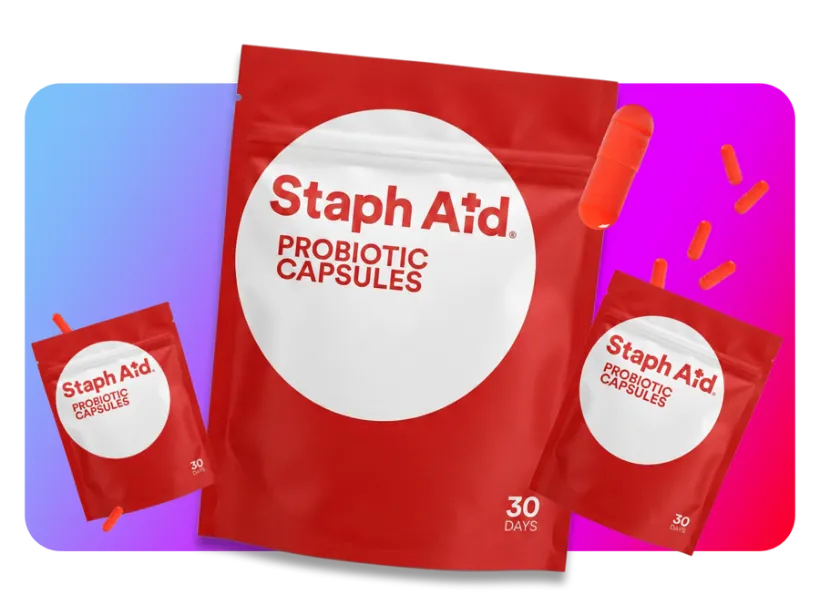

Daily probiotic · 30 capsules
Staph Aid Probiotic Capsules
Formulated to support your skin's and immune system's defenses against the staph most people already carry.
✓ 2 spore-forming Bacillus strains✓ 60 mg vitamin C✓ One capsule a day✓ Third-party tested [S]
Rating slot — EMPTY until ≥ 50 verified reviews · "Be one of the first to review."
How much do you want?
30 days
90 daysBuy 2 Get 1
150 daysBuy 3 Get 2
Every order includes a free First Aid Kit.
Most popular · Save 55%
Subscribe & Save
$XX.XX$XX.XX$X.XX/day
✓ Free shipping, every order✓ Pause, skip, or cancel anytime✓ 30-day money-back guarantee✓ Subscriber-only perks [V]
One-Time Purchase
$XX.XX$X.XX/day
✗ No free shipping [V]✗ Discount on first order only
Discount auto-applied
30-day money-back guarantee·Third-party tested·Free US shipping
1 in 3adults carries S. aureus [S]
180 mgproprietary Bacillus blend per capsule
60 mgvitamin C — 66% daily value
30capsules per pouch
Supplement facts [V: real label to replace]
Staph Aid vs. a typical probiotic
Staph AidTypical
Spore-forming strains [S]✓✗
Formulated around staph carriage✓✗
Vitamin C included✓✗
Third-party tested every batch✓?
Free First Aid Kit✓✗
"Typical probiotic" refers to common Lactobacillus/Bifidobacterium products; no specific brand is named.
Why Staph Aid?
Because a third of adults carry S. aureus and almost none of them are doing anything about it. Staph Aid is the daily habit built for that gap: a probiotic formulated to support the skin and immune defenses that keep staph in check, in a form you'll actually take.
Ingredients & allergens
Proprietary Probiotic Blend 180 mg (Bacillus coagulans, Bacillus subtilis) · Vitamin C (as ascorbic acid) 60 mg. Other ingredients: [V: capsule material, fillers from label]. Vegan · Gluten-free · Dairy-free · Nut-free · Non-GMO [V: confirm each].
Why spore-forming strains?
Bacillus probiotics travel as spores — a dormant, protective form — and activate in the gut. That's the difference between a probiotic that survives stomach acid and one that mostly doesn't. [S]
Science & testing
Ingredient research: [S: list the specific B. subtilis / B. coagulans studies]. Product testing: independent lab, every batch, heavy metals and microbial panel, potency at release. Manufactured in a cGMP facility [V: name/registration].
Directions
One capsule daily with water. Any time of day. Consistency matters more than timing.
Who should not take this
If you're pregnant, nursing, immunocompromised, or taking medication, talk to your clinician first. Not for children under 18 [V]. Staph Aid does not treat infection — if you have an active skin infection, see a doctor.
Questions
When will it arrive?
Orders ship within 1 business day [V]. US delivery in 3–5 days [V].
What's in the box?
Your pouch(es), the First Aid Kit (zip pouch, Staph Aid pimple patches, gel pack) [V: confirm contents], and a short card on how to take it.
When will I notice anything?
Honestly — you may not. Staph Aid supports a balance you can't feel. The point is the daily habit, not a sensation.
Is it safe to take every day?
It's designed to be. Both strains have a long history of use in supplements [S]. If you're pregnant, nursing, immunocompromised, or on medication, ask your clinician first.
Does it treat a staph infection?
No. Staph Aid is a dietary supplement, not a medication. If you have an active infection, see a doctor.
How do I cancel?
From your account, in one tap. No calls, no chat, no waiting.